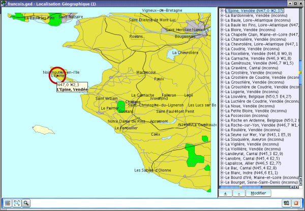
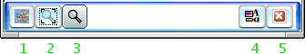

Cette fenêtre va vous permettre de localiser les gens qui
sont présents dans votre arbre généalogique.
Une fois que vous aurez importé les cartes correspondantes
(voir plus loin dans les paramètres pour la procédure),
vous pourrez en cliquant sur le nom d'une ville qui apparaît
sur la carte, voir dans la fenêtre de droite la liste se
centrer sur ladite ville, et en cliquant sur le signe "+" à
côté du nom de cette même ville, visualiser tous
les évènements qui se sont passés dans cette
localité.
A l'inverse, si vous cliquez sur le nom d'une ville dans la liste
déroulante, la carte va se centrer sur cette ville et un
cercle rouge vous permettra de mieux voir où elle est.
Maintenant, vous remarquerez trés vite, que certaines
localités, sont recensées comme étant
"inconnu" dans la liste. C'est normal, d'une part la base
n'est pas complète, et d'autre part, un certain nombre de
villages n'existent plus, ou des noms ont pu changer. Ne vous
effrayez pas. Cette fenêtre dispose d'un moyen pour
compléter, modifier la base de données. Une chose est
à noter, toutes les modifications sont enregistrées
dans un fichier externe à la base de données, donc
vous ne risquez pas de les perdre, si vous téléchargez
plus tard une nouvelle mouture de la base de données plus
à jour.
Donc pour en revenir aux modifications qu'on peut y apporter, il vous
suffit de cliquer sur le bouton "Modifier" qui se trouve en
bas de la liste déroulante.
Une nouvelle fenêtre va s'ouvrir. Là plusieurs
possibilités ; D'une part vous pouvez voir plusieurs fois le
nom de la ville qui vous intéresse, mais ce nom existe dans
plusieurs départements, régions, voir pays. Choisissez
celui qui vous concerne. De cette manière vous ne risquez pas
de voir votre arbre se centrer sur Paris au Texas (USA), mais bien
à l'endroit qu'on connaît en France si jamais vous aviez
chargé et la carte de France, et la carte du Texas (USA) (un
petit sourire n'a jamais fait de mal dans un document d'aide, non).
D'autre part, il est possible que votre localité n'existe pas
dans la base ; il vous suffit alors de rajouter les coordonnées
géographiques (latitude et longitude) et de cliquez sur
"Mémoriser les Coordonnées"
Dernier détail, les signes "+" et "-" qui se trouvent sous la liste des localités, vous permettent d'expanser ou de concentrer toutes les villes de la liste. Essayez, vous comprendrez facilement de quoi il retourne.

Remarque :
Il est possible de créer ses propres cartes. Par exemple celle
que vous voyez sur cette page est quelque chose que j'ai
créée de toutes pièces. Pour le moment aucun
serveur n'héberge les cartes qui ont pu être faites,
mais cela pourrait venir dans l'avenir pour permettre à tout
le monde de profiter du travail des autres. N'hésitez pas
à apporter votre contribution dans ce domaine également.
Merci.